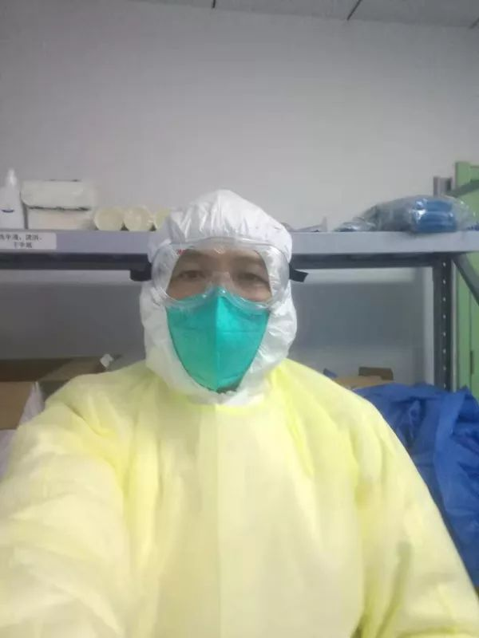
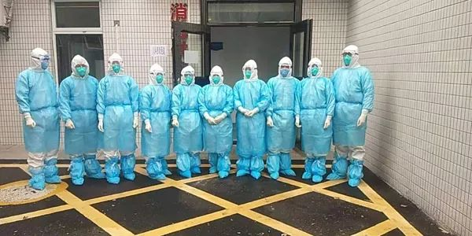

超汶川地震！25633名逆行者驰援湖北保卫战！王贺胜：已开放9个方舱医院
原文链接 备份链接 2月15日上午，国务院新闻办公室在湖北武汉举行新闻发布会，请国家卫生健康委党组成员、副主任，湖北省委常委王贺胜等介绍在湖北组织开展疫情防控和医疗救治工作情况，并答记者问。 此次调动医疗救援规模速度超汶川地震 王贺胜介 …
澎湃新闻记者 邓雅菲 实习生 陈紫嘉

江西援助湖北医疗队成员、玉山县中医院ICU主任刘建华。
2月5日，湖北随州下辖的县级市广水市在官网挂出一份求助信《SOS！！！广水紧急求援！！！》：广水市人口95万人，医疗资源极其匮乏，全市仅有两家纳入三级管理的二甲医院，目前已不堪重负，恳请国家、省市尽快向广水派出医疗队。
2月6日下午4点50分，玉山县中医院ICU主任刘建华接到通知，自己将作为江西省援鄂医疗队的一员前往湖北随州下辖的县级市广水，支援抗疫一线。
没有丝毫犹豫，当天下午他就从玉山赶往南昌集合，当晚便坐上了由南昌飞往武汉的飞机，于7日凌晨一点多抵达武汉，又从武汉坐车前往随州。
经过一路奔波，直到2月7日凌晨4点半，刘建华和江西医疗队的同事们终于抵达了随州。在随州紧急培训一天后，2月8日上午10点，刘建华和同事们坐车从随州赶往广水。

江西援助湖北医疗队成员在赶赴广水的大巴车上。
刘建华被分配到广水市第二人民医院开展新冠肺炎患者救治工作，“广水是随州病人数量第二多的县级市，且病人主要集中在广水市第一人民医院和广水市第二人民医院，两家医院的治疗压力非常大。广水市第二人民医院一共有5个病区，我和另外4名同事负责第一病区的治疗，该区有20多个病人，其中3人病情危重。”
据刘建华向澎湃新闻（www.thepaper.cn）介绍，该院第一病区此前由本院的两名医生和两名护士负责，在交接之后，就由江西医疗队的5名医务人员顶替他们，“我们来这里以前，该院的医护人员已经坚持了二十多天，肯定是很累的。”
令刘建华印象深刻的是，2月11日晚上，一位30多岁的重症病人看到他来后很高兴，不停地对他说，“感谢江西人！”

刘建华和医疗队同事们的合影。
刘建华告诉记者，“虽然来到一线很危险，但这也是我们应该做的，做好医生的本职工作，就是对抗击疫情的最大支持。我也想请我的妻子和女儿放心，我会保护好自己。”
犹记得离开玉山那天，刘建华坚决不让妻子和女儿到医院送别，“因为这样的离别真的很难过，我不愿让她们看着我离开。”
面对丈夫主动请战奔赴一线的决定，刘建华的妻子希望丈夫可以心无旁骛地出征，不愿展现脆弱的一面让他担忧。她强压下心头的不安，默默将寓意“平安吉祥”的苹果和橘子放进丈夫的行李中。
离别的近十个日夜里，她寝食难安，看着湖北此前不断攀升的确诊人数，心疼穿着厚厚的防护服一天工作10小时的丈夫，还要安慰因害怕而哭泣的女儿。
2月14日，情人节，她把对丈夫的担忧、思念与祝愿都写成了文字，写下一封信，献给正在一线抗疫的丈夫刘建华。澎湃新闻在征得刘建华的妻子同意后，刊载此信。
【老公，今天请允许我脆弱下】
当得知你请战支援湖北的那一刻，我的心似乎一下停止了跳动，可是我知道我不能阻止你。
抗疫救人，是一名合格的医务人员的本份。那么多医务人员夜以继日奋战，奔跑着跟病毒抢时间、抢生命，“你不要去”，这句话我怎么说得出口。
你说，这么危险的事情，我不能让别人去，必须自己去。老公，那一刻我对你肃然起敬。
我强压下心头的难过和不安，默默地为你收拾行囊。一时间，我只觉得行李箱为什么不够大！穿的装不下，吃的也装不下，更装不下我的牵挂……
当你把我费尽力气装进去的东西，又整理出来的时候，当你不解风情地把我偷偷藏进去寓意着平安吉祥的苹果和桔子都拿出来时，我真的想大声地哭一哭。
可是我不能哭，我不能在你面前脆弱，我不想让你牵挂我们，我要你心无旁骛地出征。你即将奔赴一线，已经身负千斤，我不能再给你加担。
当你接到紧急出发的通知之时，我的声音和手是颤抖的，我的心更是狂跳着。
我低头故作幽默地对你说，几步路而已，就不送了。其实，那时我的眼泪已经在发红的眼框里打转，可是我不能让你看到我眼底里深深的不舍和担忧，只好在心里默默地念着：我的爱人，加油，早日平安归来。
从知道你要支援湖北至今，近十个日夜里，我寝食难安。
在湖北每天确诊人员不断攀升的数据公布时，当被感染的医护人员越来越多时，当一队队援助人员又纷纷奔赴武汉时，当孩子因担心恐惧哭泣，我紧紧拥抱给她安全感时，当你我年迈的妈妈纷纷哭泣着向我倾诉她们的担忧，我却要故作轻松安慰她们时，我依然坚强着。
但是，老公，当我看到你进行了十来个小时的工作，拖着疲惫、沉重的脚步，摘下口罩，露出布满深深勒痕的脸颊，却笑着对我说，“没事，没事，我很好”时，我好想对你说，今天，就请允许我脆弱下。
可否让我暂时卸下坚强的外壳哭泣一下，哭出我的担心，哭出我的牵挂，就让我脆弱那么一下下，隔着屏幕拥抱下你一下。
亲爱的，你真的受累了，你真的真的要在治愈别人的同时，保护好自己！因为你是我们这个家的顶梁柱，你更是所有医护人员的表率，你是大家的骄傲，你更要用你的双手去救护更多的人。
我的爱人，我们等你平安凯旋。
本期编辑 常琛
推荐阅读


原文链接 备份链接 2月15日上午，国务院新闻办公室在湖北武汉举行新闻发布会，请国家卫生健康委党组成员、副主任，湖北省委常委王贺胜等介绍在湖北组织开展疫情防控和医疗救治工作情况，并答记者问。 此次调动医疗救援规模速度超汶川地震 王贺胜介 …
原文链接 备份链接 点击上方蓝字 _ 关注我们 _ 非常时期，武汉成了全国人民挂念、祈福的城市。封城后，武汉人民的真实生活是什么样？ 正和岛自1月26日起特别推出《叶青：我在武汉疫区的第N天》专栏。叶青是一位定居武汉40年的市民，也是一名 …
原文链接 备份链接 那天我在金银潭医院交完货，已经是晚上六点。我这才想起来，原来已经整整24个小时没吃饭了。路上连水都没怎么喝，也没觉得饿，人忙起来的时候感觉不到饿。 口述 | 宋 华 整理 | 王仲昀 来武汉半个多月，前天（2月14日） …
原文链接 备份链接 方舱医院患者出院还是比较快的，这样周转起来，就可以接收大量的病人，可以做到“应收尽收”。 文 | 黄 祺 13天前，武汉新冠肺炎疫情仿如“暗夜”——社区还有大量感染者未能得到诊断，他们如果得不到及时的治疗，病情很可能 …
原文链接 备份链接 张定宇常说，自己“太急了”。他的急迫感，来自于自己逐渐萎缩的运动神经元细胞，也来自于肆虐武汉城的新型冠状病毒，他想从死神手中抢夺回更多的生命。 张定宇很急。国家电视台拍摄他那天，他从门诊大厅、病房、值班室、会议 …